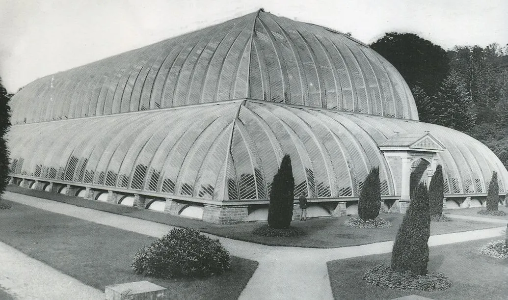

From the 17th-century citrus orangeries of Stuart estates to the elaborate freestanding Victorian glasshouses of the 1880s, glazed garden pavilions have long been the crowning architectural feature of the English landscape garden. Originally built to house exotic botanical specimens brought back by Victorian plant hunters, these structures quickly evolved into social sanctuaries for afternoon tea, private reading, and evening entertaining.

Evolution from Masonry Orangeries to All-Glass Pavilions
- 18th-Century Orangeries: Characterized by thick stone or brick walls, tall south-facing sash windows, and solid roofs—designed primarily to shelter overwintering citrus trees.
- 19th-Century Wrought-Iron Glasshouses: As glass taxes were repealed in 1845 and rolled iron became accessible, masonry walls gave way to slim metal frameworks resting on low brick plinths, flooding interiors with overhead sunlight.
- Modern Bespoke Garden Pavilions: Today’s freestanding steel-and-glass pavilions retain the octagonal, cruciform, and domed silhouettes of Victorian estate glasshouses while integrating modern double glazing, underfloor heating, and concealed lighting.
Placing a Freestanding Pavilion in a Contemporary Garden
Whether set at the focal point of a formal parterre, beside a walled kitchen garden, or overlooking a countryside lawn, a freestanding glass pavilion anchors the landscape year-round—offering a peaceful retreat visually distinct from the main residence.
From orangery to conservatory
The orangery came to England in the seventeenth century as a way to keep citrus trees alive through the winter. Early orangeries were essentially masonry buildings with tall windows facing south and solid roofs. Over the eighteenth century they became more elegant, often designed by leading architects as garden ornaments in their own right. As glass became cheaper and iron more available in the nineteenth century, roofs began to be glazed too, and the conservatory as we know it emerged: a room where plants and people shared the light.
The repeal of the glass tax
Glass was taxed in Britain for about a century, which kept it expensive. When the tax was repealed in 1845, and window tax followed in 1851, glass became far more affordable. Combined with new manufacturing methods and the spread of iron construction, this led to a boom in glasshouses of every kind, from the vast palm houses of botanical gardens to vineries, fern houses and conservatories on country estates and suburban villas.
The working glasshouses of the walled garden
Many country houses had a range of glasshouses in the walled kitchen garden: lean-to vineries against warm brick walls, peach houses, melon pits and propagating houses. These were practical buildings, often heated by hot-water pipes from a boiler, and many survive today, restored or converted. Their proportions, with long glazed ranges set against brick, remain an inspiration for lean-to designs against garden walls.
Pavilions as garden ornaments
Alongside working glasshouses, estates built ornamental pavilions: domed, octagonal or cruciform structures placed at the end of a vista or at the centre of a formal garden. These were designed to be seen from the house and visited for tea or conversation. Today's freestanding garden pavilions continue that tradition. Our Finial Pavilion, with its pyramidal roof and open metal finial, and the Winter Dome Pavilion, with its rounded bays and glazed dome, are modern examples of the type.
Bringing the tradition to a modern garden
- Scale: choose a size that suits the garden and the view from the house, not just the floor area you need.
- Base: a low brick or stone plinth ties the pavilion to the garden and protects the frame.
- Setting: paths, hedges and planting around the pavilion make it feel part of the garden rather than placed on a lawn.
- Use: decide early whether it is for dining, reading, plants or entertaining, as this shapes heating, lighting and services.
Our design collection
Browse our classical pavilion designs and glasshouse designs, or read our practical guide to freestanding glass pavilions.
Frequently asked questions
What is the difference between a Victorian glasshouse and an orangery?
An orangery traditionally features substantial brick or stone piers with a flat roof and central glazed lantern, whereas a Victorian glasshouse maximises glass area across both walls and pitched or domed roofs using slender metal framing.
Do freestanding glass pavilions need to sit on a brick wall?
Setting a metal glasshouse on a low masonry dwarf wall (typically 450mm to 600mm high) protects the base from soil splashback, houses perimeter heating pipes, and echoes authentic Victorian estate proportions.
Can a freestanding garden pavilion be used as a dining room or studio in winter?
Yes. With thermally broken steel frames, insulated dwarf walls, low-E double glazing, and underfloor heating, freestanding pavilions stay comfortable through winter, with condensation kept under control by heating and ventilation.
What architectural shapes are most traditional for English estate pavilions?
Octagonal cupolas, rectangular gabled glasshouses with projecting central porches, and curvilinear domed pavilions are the most enduring forms in English garden architecture.